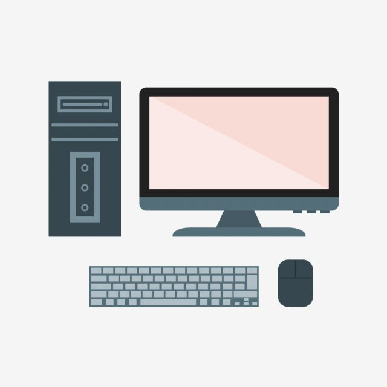
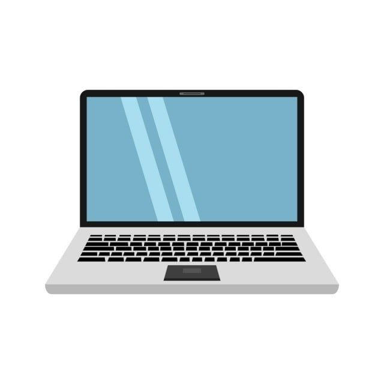

Computadoras de Escritorio
|
Tenemos diferentes opciones en equipos de sobremesa teniendo en cuenta sus necesidades o las de su empresa, tenemos desde equipos básicos para punto hasta equipos gaming para el usuario doméstico de alta exigencia.
Tenemos también un amplia gama de mejoras y expanciones para cubrir cualquier cadencia que tengan sus equipos de sobremesa y que cumplan adecuadamente sus necesidades.
|
 |
Laptops
|
Tenemos equipos especializados en estudiantes que buscan portabilidad y duracion de bateria, ademas contamos con una amplia gama de equipos gaming para que encuentre al que mejor se ajuste a su presupuesto.
Para el cliente empresarial ofrecemos opciones muy eficientes y resistentes con amplia conectividad y a precios muy económicos así como también la posibilidad de poder comprar lotes de computadoras.
|
 |
Impresoras
|
Tenemos impresoras domésticas con sistema continuo integrado o tradicionales de cartuchos así como también impresoras láser.
Para el cliente empresarial ofrecemos opciones multifuncionales especializadas en grandes cargas de trabajo o impresoras para punto de venta compactas y eficientes.
|
|